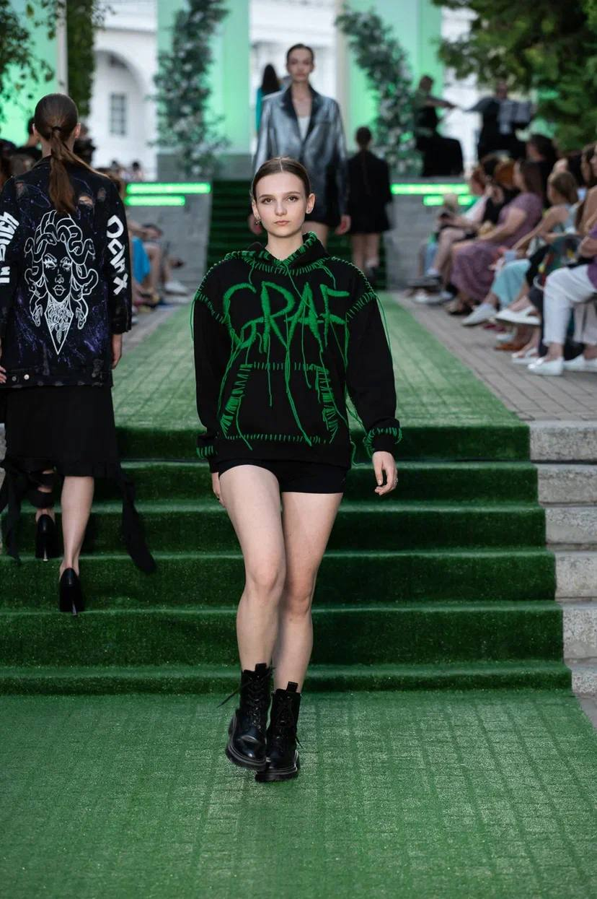
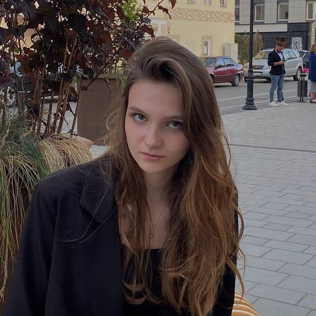

FEDARIA
Дарья Дмитриевна, известная под псевдонимом fedaria. Дата рождения: 26.03.2006. Живет в городе Ульяновск, учиться в 11 классе спортивной школы дальнего завсвияжья. Является хорошей моделью, значится в таких модельных агенствах как S-LANA models. Имеет много талантов, таких как, например, художесвтенная живопись и танцы.
Коротко о детстве
Родилась в Ульяновске, очень милая и красивая девочка. Любила маму, папу, тётю и старшего брата. Когда вышла во двор, начала дружить с соседкой по этажу Ксюшей Аверьяновой. В школу пошла юная Дарья с незнанием, что её ожидает дальше. До шестого класса была отличнецей. Затем в шестой класс пришли новые люди, такие как автор этого текста, и учеба начала медленно, но уверенно идти в низ. Завязался роман с новеньким Владиславом, который продолжается до сей поры.
Подробнее о подростковом возрасте
Для подростка Дарья довольно умная и самостоятельна. В свои 16 лет уехала на длительное время в Индию, одну из самых опасных стран мира. Кстати говоря, по модельному контракту. Дарья приобрела незаменимый опыт самостоятельности, и выбрала в ближайшее будущее курс на модельные путешествия. Подруг в кругу Дарьи мало, но они преданные и честные, такие как Виктория Руднева и Ксения Аверьянова. Дарья имеет двух телохранителей под именами Владислав и Николай.
Хобби и работа
Дарья имеет опыт работы в ресторане "Шашлыкoff", выделялась преимуществами среди своих коллег. Нынешнее хобби у Fedaria это веб-дизайн и рисование. Тут у Дарьи отдельный талант. К примеру, дизайн данного сайта разрабатывался ею.
Интересные факты
Личная жизнь
Happiness loves silence♡
Дарья. Семьнадцать лет отроду.Проживает в городе Ульяновск(Симбирск ранее). Хорошовладеет англйским языком...
Владислав. Семьнадцать лет отроду. Проживает в городе Симбирск(Ульяновск ныне). Хорошовладееет матным языком...